Know Your Finances
A step-by-step guide for Paramount employees. Look up your own time-off balance and 401(k) numbers in the QuickBooks Workforce app, any time, from your phone.
Open the app
- 1
Open the QuickBooks Workforce app
- 2
Sign in
The app opens on the Money screen. The tabs you need are along the bottom of the screen.
How much PTO do I have left?
- 3
Tap Time Off at the bottom of the screen (the airplane)
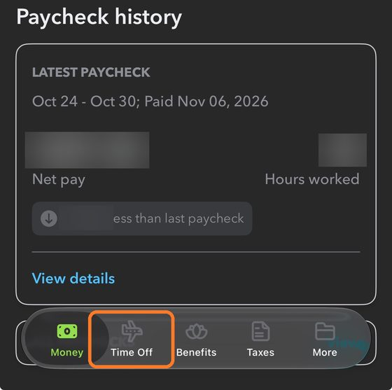
- 4
Look at the Available time off box. The number next to Paid is how many hours you have left.
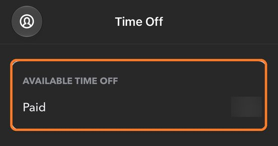
The "h" means hours.
It updates on payday. The balance is as of your latest paycheck. Time off you took after that won't be subtracted yet.
What's going into my 401(k) and what's it at?
- 3
On the Money screen, find Latest paycheck and tap View details.
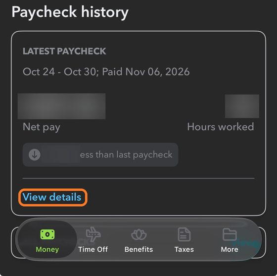
- 4
Tap the little arrow next to Deductions to open it. You'll see your 401(k) line(s) for this paycheck.
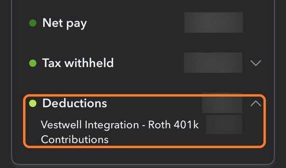
This tells you which account you're putting money in right now.
Not sure what Pretax and Roth mean? See the Tips tab.
- 5
Scroll down to Employer Contributions. This is Paramount's match on this paycheck, money the company adds on top of yours.
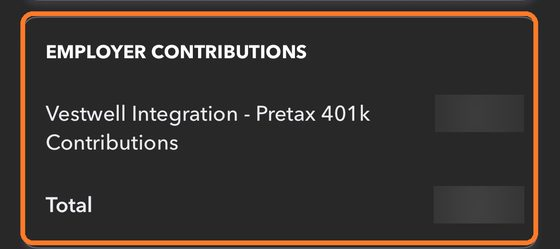
Employer Contributions will always be contributed to your Pretax 401k account.
- 6
Want totals for the whole year? Scroll back to the top of the paycheck and tap Year-to-date.
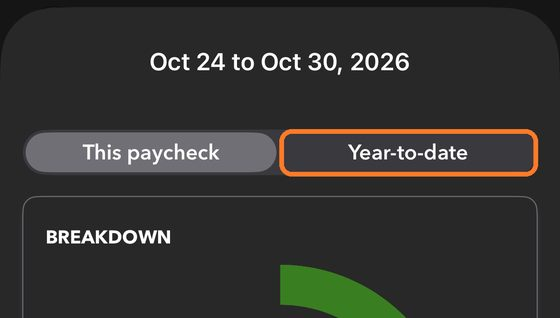
- 7
Open Deductions again and scroll down. The same boxes now show everything since January 1.
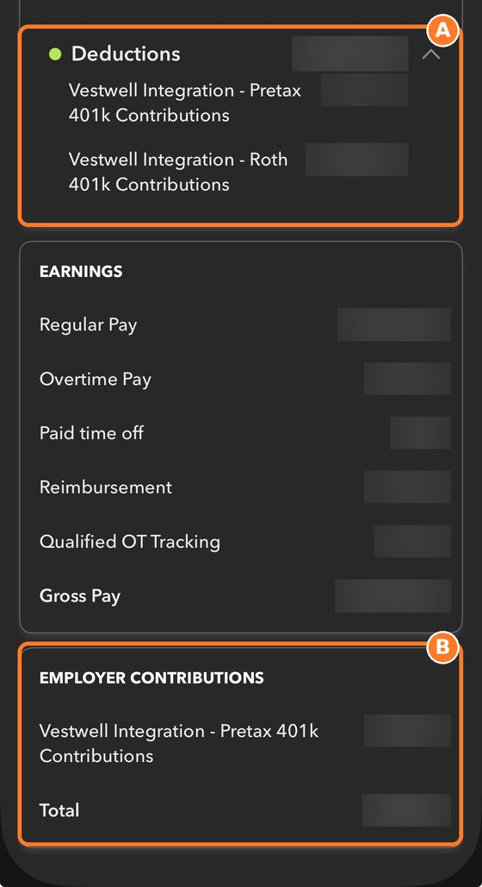
AYour total this year. If you have more than one 401k line, add them together.
BParamount's match this year. Use the Total line.
Seeing both Pretax and Roth in Year-to-date? That means you switched accounts sometime this year. The This paycheck view (step 4) shows what you're using now.
Year-to-date starts over at zero every January 1.
Your 401(k) in Vestwell
Where your 401(k) money lives, how to check it, and how to change what you put in.
Where does my 401(k) money go?
Two places handle your 401(k).
Rule of thumb: Workforce shows what came out of your paycheck. Vestwell shows what's in your account and is where you make changes.
Get into your account
- 1
Download the Vestwell app from the App Store (iPhone) or Google Play (Android). You can also use vestwell.com on a computer.
- 2
First time? Once you're eligible, Vestwell sends you a welcome email. Follow its link to create your login. You're eligible after 6 months on the job.
- 3
Tap Sign In and enter your email and password. Vestwell will text or email you a code to finish signing in.
Tip: turn on Face ID or fingerprint sign-in when the app offers it, so you don't need your password every time.
Your home screen, explained
After you sign in, you land on Retirement Overview. Here's what each part means.
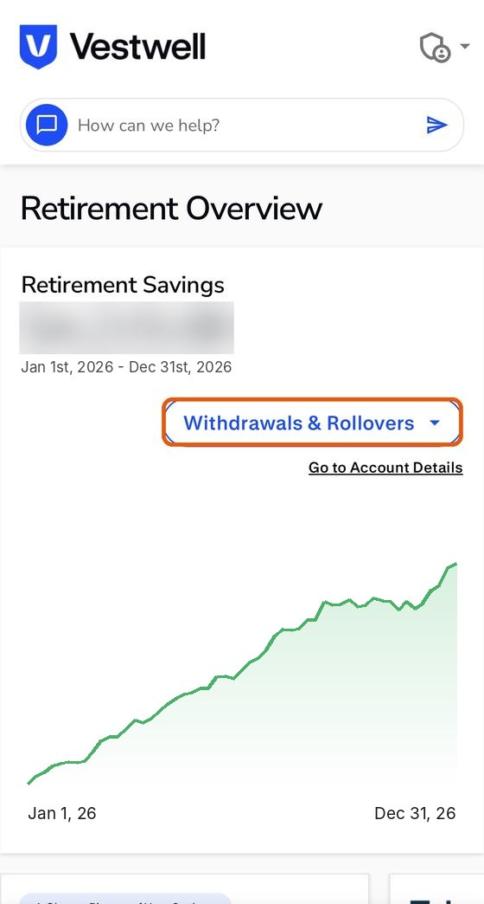
The buttons along the bottom of the app:
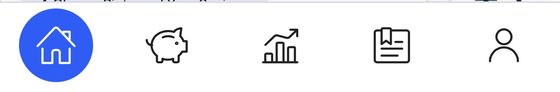
- House Home (Retirement Overview).
- Piggy bank Account details: your balance split into Pretax, Roth and company money.
- Chart Investments: what you own and how it's grown.
- Document Statements and plan documents.
- Person Your profile: address, phone, email.
- Retirement Savings
How much is in your account right now, and a chart of how it's grown. - Savings Rates
How much comes out of each paycheck, and whether it goes to Pretax, Roth, or both. This is where you make changes. - Investment Strategy
How your money is invested. - Beneficiary
Who gets your account if something happens to you. - Recent Activity
Every deposit into your account. Saver Contribution is your money (it says Pretax or Roth under it). Employer Contribution is Paramount's match. Pending means it's from your latest paycheck and is still on its way. - My 2026 Contributions
How much you've put in this year, with a bar showing how close you are to the yearly IRS limit ($24,500 in 2026). - Withdrawals & Rollovers
For taking money out, or moving a 401(k) from another job. Most people won't touch this until they leave or retire.
Here's what Recent Activity looks like. Each paycheck adds two lines: your money and Paramount's match.
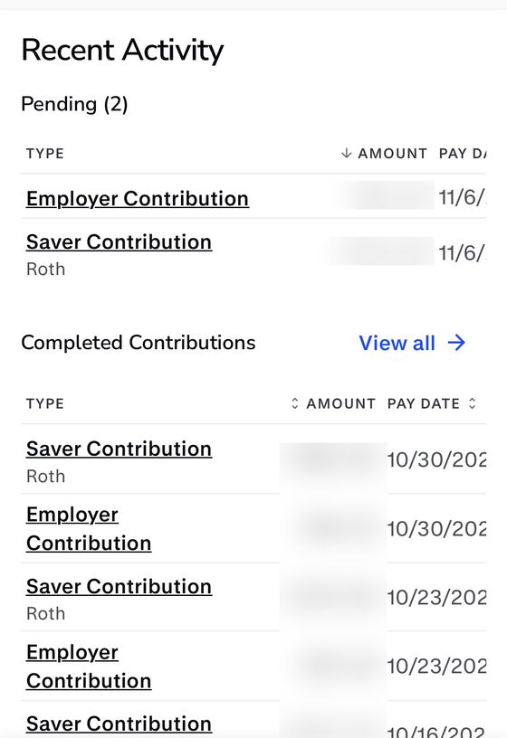
Change how much you save
- 1
On the home screen, find Savings Rates and tap Change Savings.
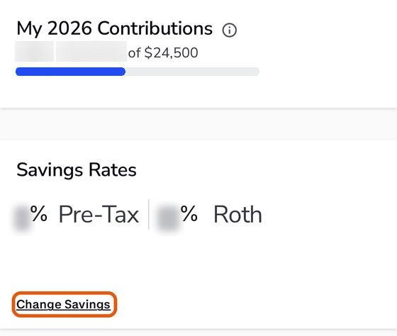
- 2
On Set Your Savings, type the percent of each paycheck you want to save into the Pre-Tax box, the Roth box, or both.
Choose where it goes: Pretax, Roth, or some of each.
Pretax money comes out of your check before income tax is figured, so less income tax is taken from your paycheck. Roth money is taxed now, but comes out tax-free in retirement. More on the Tips page.
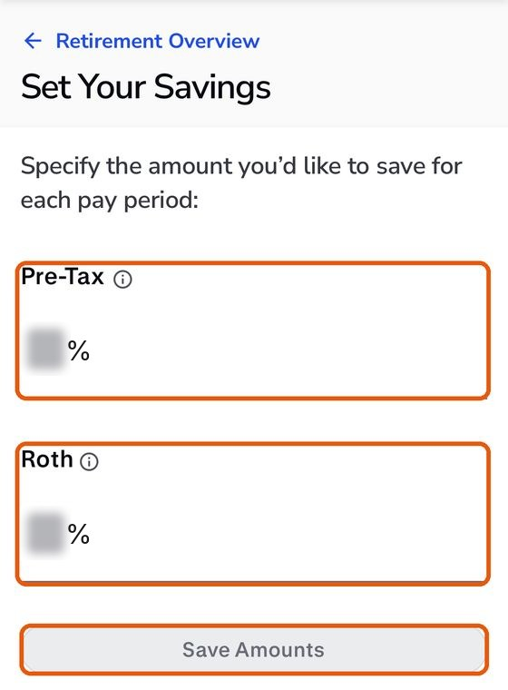
- 3
Tap Save Amounts. Vestwell shows your Old Savings next to your New Savings. Check it, then tap Apply Changes. Changed your mind? Tap Cancel.
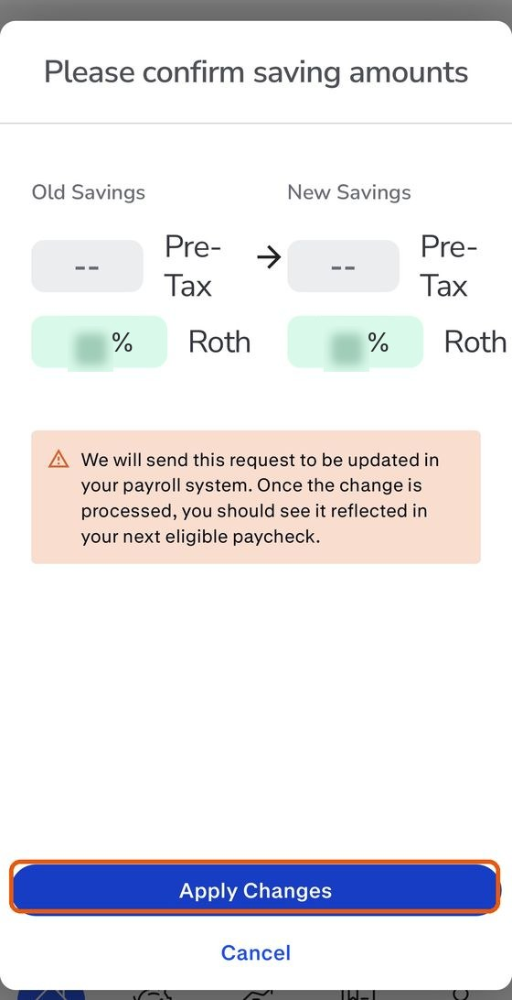
When will I see it on my paycheck? On your very next paycheck. Check it in Workforce under Deductions to make sure it went through.
Want the full company match? Save at least 5% of your pay. Anything less leaves free money on the table.
Check how it's invested
Your money is put into investments that can grow over time. The Investment Strategy section on the home screen shows which option you're using. Tap Manage Investments to see more or switch.
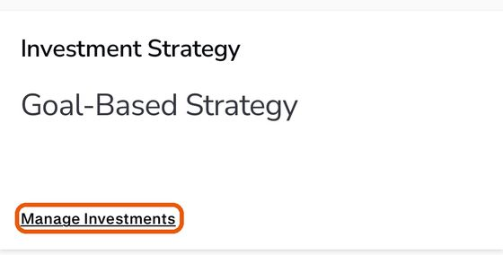
The options:
- Age-based
Picks a mix for you based on when you'll likely retire. It gets more careful as you get closer to retirement. You don't have to do anything. - Risk-based
You answer a few questions about how comfortable you are with ups and downs, and it picks a mix to match. - Goal-based
You enter your income, when you want to retire, and how much you'd like to have each year in retirement. Vestwell builds a plan around that goal and shows whether you're on track. - Custom
You choose the funds yourself. Best for people who already know about investing.
Balances go up and down with the market. That's normal. A 401(k) is for the long run.
To switch, tap Change Strategy at the top of the investments screen.
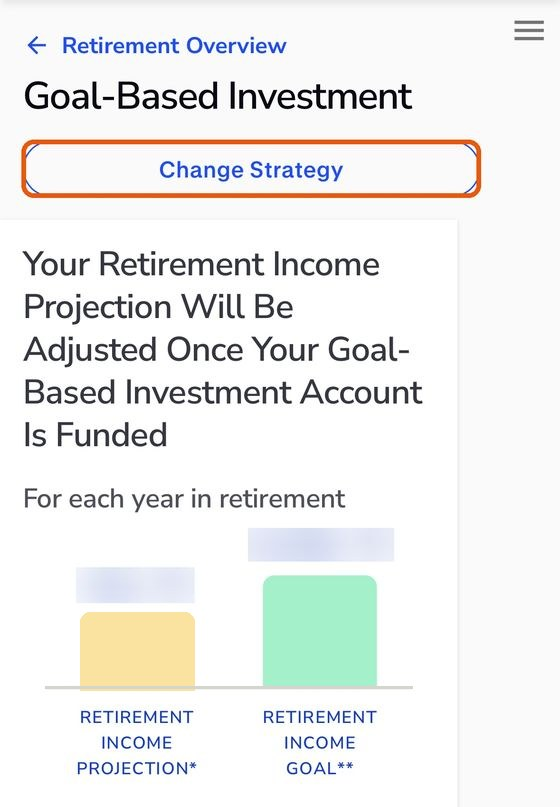
Name a beneficiary
A beneficiary is the person who gets your 401(k) if you pass away. It takes 2 minutes and protects your family.
- 1
On the home screen, scroll to Beneficiary and tap Change Beneficiary, then Add Beneficiary.
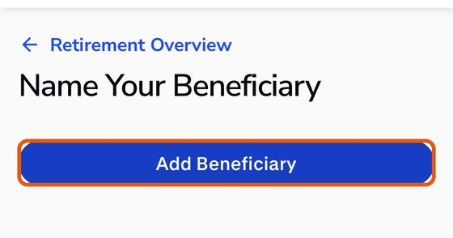
- 2
Enter their name, relationship, Social Security number, birth date and contact info. Have this handy before you start.
- 3
If you add more than one person, split the percentages so they add up to 100%.
Find statements and plan documents
In the app, tap the document icon at the bottom.
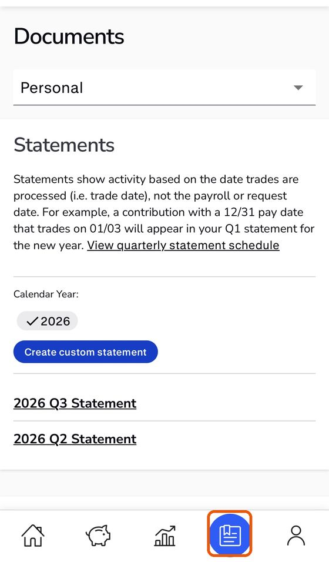
- Statements: a report of your account every 3 months. Tap one to open it, or tap Create custom statement for any dates you want.
- Plan documents: tap the menu that says Personal and choose Plan. There you'll find the Summary Plan Description, the official rulebook for Paramount's plan.
Know your plan
- Company match
Paramount matches 100% of the first 3% you save, plus 50% of the next 2%. Save 5% and Paramount adds 4%.
Example: on a $1,000 paycheck, you save $50 (5%) and Paramount adds $40. That's $90 going into your account.
The match always goes into your Pretax account. - Who can join, and when
Starting January 1, 2027, you can join after 6 months on the job (until then, it's 12 months). Vestwell emails you when you're eligible. - Vesting: when the match is fully yours
Money you put in is always 100% yours. The company match is 100% yours right away too. Nothing is taken back if you leave. - Borrowing from your 401(k)
Yes, loans are allowed. For the rules and how to apply, open the Loan Procedures document: tap the document icon, tap Personal, and choose Plan.
What happens to my 401(k)?
It's still your money. Your usual choices are:
- Leave it in Vestwell.
- Roll it over into your new job's 401(k) or an IRA. Use Withdrawals and rollovers on the home screen to start.
- Cash it out. You'll usually owe taxes, plus a 10% penalty if you're under 59½. This is usually the most expensive choice.
Need help?
- Login, account or investment questions: Vestwell's help chat (the ? icon in the app) or help@vestwell.com.
- Paycheck deduction looks wrong: Talk to Zach.
Good to know
How your 401(k) accounts work, plus answers to common questions.
Still have a question?
Send it to Zach. Just your name and your question, no login needed.
Ask Zach a question